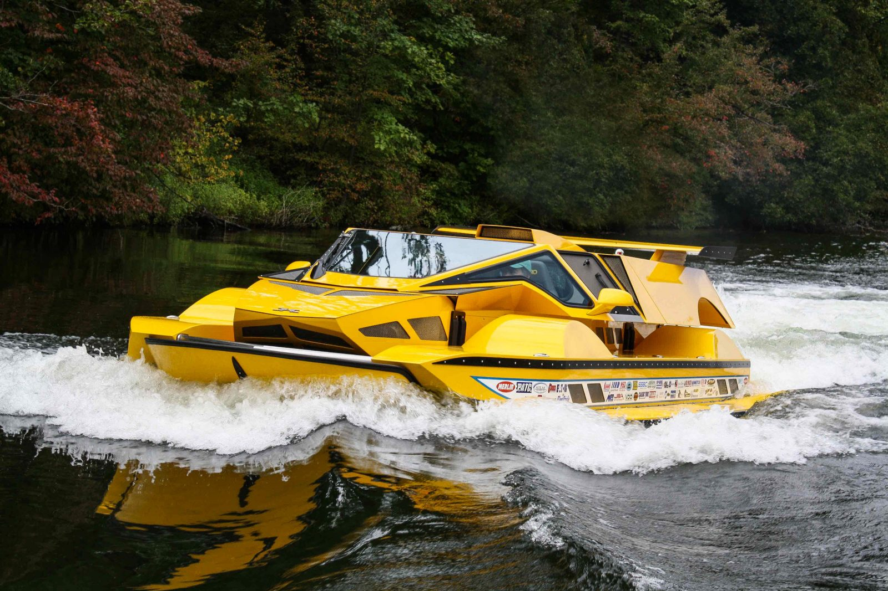

HERE ARE A FEW INNOVATIONS WHICH MAY CHANGE THE WAY WE TRAVEL IN WATER :
GIBBS AMPHIBIAN BIKSKI: Designed to smoothly transition from the land to water, the ‘biski’ is an amphibious motorcycle that changes function at the push of a button. with almost no delay it converts to jet-skis, retracting wheels out of the way and switching to jet propulsion. the switch from ‘road’ mode to ‘water’ mode is done in less than five seconds, so riders barely lose momentum as they ride in or out of the water.created by new zealand-based entrepreneur alan gibbs, his company has distinguished itself by creating amphibious vehicles that can reach high speeds on both land and water alike.
THE JET VESPA: This vehicle is a fusion between a modern jet ski and a vespa 50 special from the 60s. the water vehicle, conceived for the recreational purpose, is made of fiberglass and allows for speed of up to 30 knots.the elegant lines of the legendary motorbike are precisely repeated in the new water vehicle — even the reflectors are placed where they used to be. while the jet is not running, to facilitate the accommodation/access of the passengers, a gimbal self-balancing system keeps it aligned with the water surface.
MANTA5 WATERCYCLE :The Manta5 has an aluminum frame, two carbon fiber hydrofoils that provide lift, and a 400-watt motor that augments the rider's pedalling power to turn the propeller.The whole thing weighs around 20 kg (44 lb), and can be partially disassembled for transport in the back of a car. It's designed for riders weighing between 70 and 100 kg (154 and 220 lb), and can be used in both fresh and salt water.
SEABUBBLES WATER TAXI :french start up seabubbles is one step closer to seeing its fleet of water taxis in service following the successful testing of its hydrofoil prototype.the vehicle uses technology invented by thébault for his experimental sail-powered vessel called hydroptere, which first set sail in 1994.the 4-person cabin slices silently through the waves with a pair of pseudo-wings, submerged at a 45-degree angle, lifting it after a few meters and reaching a speed of 11 to 15 km/h (6 to 8 kn).
WORX'S CRUISE : U-boat worx’s cruise ‘5-1700’ series is the world’s deepest diving five-person submarine. with the ability to reach depths up to 1,700 meters, each submersible comes equipped with two huge acrylic spheres that lets deep sea explorers take in panoramic views of the world beneath the water.

DOBBERTIN AMPHIBIOUS HYDROCAR: with the dobbertin hydrocar, both can be a reality thanks to one innovative design-a car and a boat. the dobbertin hydrocar morphs from a land vehicle into a water craft within seconds. The bill mitchell racing engine, which produces 762 hp, then powers the rollo 6-blade stainless steel propeller. however, on ground, the vehicle functions with front-wheel drive, stainless steel brakes and suspension for the front and rear axles.the amphibious vehicle was created by rick dobbertin after a 10-year build that, reportedly, cost in excess of $1 million USD.
VIK ELECTRIC BOAT :vik boats has developed a new eco-friendly boat, free from noise, vibration and exhaust gases that can be recharged from solar panels or wind power. the hull of the boat is designed to move in an energy-efficient and silent mode of movement, allowing users to take a weekend trip on a single battery charge.the design of the cockpit makes it comfortable to fish, while the lifting device on the mast makes it easier to work with an auxiliary boat or jet ski and allows to load a heavy load into the cockpit if necessary.
HOVERJETS AQUAJET H2 :modelled after airplanes, hoverstar’s aquajet ‘H2’ is a winged diver propulsion vehicle for reducing hydrodynamic drag while maintaining balance. hoverjet claims that the vehicle is “more powerful than any other underwater scooter”, and is capable of towing up to four divers at once. the hoverjet ‘aquajet H2’ underwater flying scooter motor is quiet enough that it shouldn’t disrupt marine life, while battery life is rated at over 100 minutes per charge.
ICON A5 :The A5 is a fully amphibious experimental flying machine that’s a combination of jetski and aircraft. Instead of being limited to a fixed set of runways, it can also take off and land on any reasonably large water body. The A5’s folding wings and an optional custom trailer ensures that it can be driven to and from water and parked in your garage easily.